BMILog is a Body Mass Index logger. BMILog helps you keep track of your health with regards to your weight.
Some features of BMILog:
What is Body Mass Index (BMI)? BMI is an objective measure that can help you decide whether you weight is right for you or not. BMI is a figure calculated from your height and weight and can be used to determine if you are overweight, underweight or at a healthy weight.
There is no such thing as an ideal weight. There is such a thing as an ideal weight range. The BMI tells you, if you fall within this range. This BMI calculation is only intended for adults, not children. If you're less than 150 cm (5 feet) tall the calculation is likely to overestimate body fat. Please see disclaimer below.
So how is the BMI calculated? Simple ...
weight
-------------------
height * height
... the weight is measured in kilos and the height is measured in meters. So a person weighing 90 kg, being 180 cm tall:
90
------------- = 27
1.8 * 1.8
The BMI for this person is 27.
weight * 704.5
-------------------
height * height
... the weight is measured in pounds and the height is measured in inches. So a person weighing 198 lbs, being 5"11' tall:
198 * 704.5
------------- = 27
71 * 71
The BMI for this person is 27.
The BMI in itself is not useful. You need "something" to relate the BMI to. Various health agencies operates with different BMI tables. The two most common tables are the American table and the European table:
American European
0 - 19.9 0 - 18.4 Underweight
20 - 24.5 18.5 - 24.5 Healthy weight
25 - 25 - Overweight
A BMI between 30 and 34.9 indicates Obesity. Between 35 and 39.9, Great Obesity. Over 40, Extreme Obesity.
Our person from the calculations above would with a BMI of 27 be classified as Overweight. This person should probably consider losing some weight :o)
The Body Mass Index is recommended by the National Institute of Health (USA) and Sundhedsstyrelsen (Denmark).
This BMI Logger is provided for your information only. It is not a substitute for professional medical advice, and may not represent your true individual medical situation.
It does not take all possible factors into account in its assessment of your healthy weight.
For example, it tends to overestimate body fat in very muscular individuals or in people who are less than 150 cm. (5 feet) tall, and may underestimate body fat in people who have lost muscle mass, such as the elderly.
Do not use this information to make significant changes in your diet, exercise regimen, or other aspects of your lifestyle without consulting your personal physician or other qualified health care provider as recommended by your physician.
Please contact your physician if you have any questions or concerns.
Installation of BMILog is like installing any other Palm OS program:
When the synchronization is done you will have a 'BMILog' icon in the Unfiled category on your Palm PDA. Feel free to move BMILog to another category.
If you use Microsoft Windows you might want to install the BMILog Conduit as well:
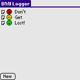 On the main screen all persons are shown. Tap New to add a person. Tap the little note icon in the leftmost column to edit that person. Tap the smiley to get the latest BMI of that person. Tap the name to add a BMI entry. The smileys indicate your health - a green (happy) smiley means you're in perfect health. A yellow smiley (so-so mood) means you're under-/overweight. A read smiley (unhappy) means you're much overweight and you should consider losing some weight :o)
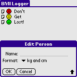 Enter a name in the Name field. If a person with that name already exists, you will be notified. Select a format for this person by selecting from the drop down list. Take care, though. Once set, this format can not be changed for the person.
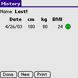 Tapping a persons name on the main form brings up the history form for that person. Tapping any of the columns offers an opportunity to delete that entry. Tap New to add a new BMI entry. The Print button will only be shown if you have Palm Print installed. Tap the button to get a printout of the history for this person. This have been tested on my Tungsten|T using a bluetooth connection to a MPI bluetooth printer adapter driving an Epson Stylus Color 640 printer.
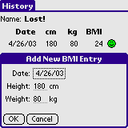 When adding a new entry all fields will be pre set to the following. Date will contain the current date - tap the date field to change. Height and Weight will contain the height and weight of the last entry. For an adult you would normally only want to change the weight ... :o)
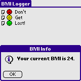 If you tap on a smiley on the main form an info box with the latest BMI for that person is shown.
Use the menus to reach some of the extra functionality of BMILog:
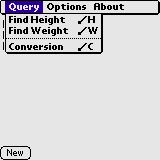 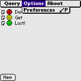 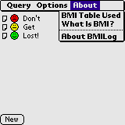
... going from right to left. The About menu contains some text for you to read - so go ahead, do just that!
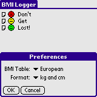 In the Options menu you will find the Preferences form. Select the desired BMI Table from the drop down list. Currently, you can only choose from two tables - the American table and the European table. In the Format drop down list you can select the default format for new persons.
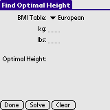 Enter your weight in the Kg or Lbs fields, select the BMI Table to use and then tap Solve. The Optimal Height readout will show you the optimal height range for the weight. Depending on the BMI Table used, the ranges will, when used in a BMI calculation fall within the Healthy Weight range. In other words, use this to find the proper height for your weight ... and then start growing! :o)
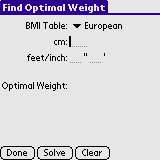 Enter your height in the Cm or Feet/Inch fields, select the BMI Table to use and then tap Solve. The Optimal Weight readout will show you the optimal weight range for the height. Depending on the BMI Table used, the ranges will, when used in a BMI calculation fall within the Healthy Weight range. In other words, use this to find the proper weight for your height ...
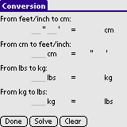 Enter heights or weights in any of the fields. Then tap Solve to get the converted values.
That is all there is to it. Enjoy! :o)